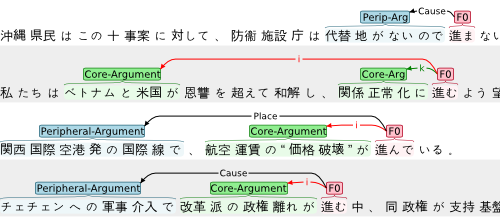

brat
home
menuitem
menuitem
menuitem
brat manual
brat case studies
brat can be applied for practical annotation tasks such as the following:
Japanese verb frame annotation

...
Next: features in overview